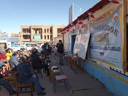

Somos una institución educativa secundaria comprometida con la formación integral de nuestros estudiantes. Nuestro enfoque educativo combina una rigurosa preparación académica con un fuerte énfasis en el desarrollo de habilidades socioemocionales, esenciales para el éxito en la vida. Contamos con un equipo docente altamente capacitado y apasionado, que trabaja en estrecha colaboración con los estudiantes para apoyarlos en su crecimiento personal y académico. Ofrecemos un currículo diverso, enriquecido con actividades extracurriculares que incluyen deportes, artes, y proyectos comunitarios, todo diseñado para proporcionar una experiencia educativa completa.
En nuestra institución, creemos que la educación es una herramienta poderosa para el cambio, y nos dedicamos a preparar a nuestros estudiantes para que se conviertan en agentes de transformación en sus comunidades. Nuestro compromiso es con el desarrollo de personas íntegras, capaces de liderar con empatía y de enfrentar con confianza los desafíos que la vida les presente.
Nuestra institución educativa secundaria nació de la convicción de que la educación debe ser más que la simple transmisión de conocimientos. Desde nuestros primeros días, nos hemos enfocado en ofrecer una formación que integre lo académico con el desarrollo personal y social de nuestros estudiantes. A lo largo de los años, hemos evolucionado y crecido, convirtiéndonos en una institución respetada y apreciada por nuestra dedicación a la excelencia y nuestro compromiso con la formación integral de los jóvenes. Con el tiempo, hemos incorporado metodologías pedagógicas innovadoras y herramientas tecnológicas avanzadas, asegurando que nuestros estudiantes estén preparados para enfrentar un mundo dinámico y en constante transformación.

Nuestra misión es proporcionar una educación secundaria de alta calidad que fomente tanto el desarrollo académico como el personal de nuestros estudiantes. Nos dedicamos a cultivar el amor por el aprendizaje, el pensamiento crítico y la creatividad en un entorno que promueve la diversidad, el respeto y la responsabilidad social. Creemos en formar individuos completos, equipándolos con las habilidades y valores necesarios para convertirse en ciudadanos conscientes y comprometidos, capaces de contribuir positivamente a la sociedad. Nos esforzamos por ser un faro de inspiración y apoyo, guiando a cada estudiante hacia la realización de su máximo potencial.
Aspiramos a ser una institución educativa reconocida por nuestra capacidad de formar estudiantes excepcionales, preparados para enfrentar con éxito los desafíos del futuro. Nos vemos como una comunidad educativa inclusiva y vibrante, donde cada estudiante es valorado y animado a explorar sus talentos únicos. Nuestro objetivo es ser un líder en la innovación pedagógica, ofreciendo una educación que combine lo mejor de la tradición con las nuevas tendencias y necesidades de la sociedad moderna. Queremos que nuestros egresados no solo se destaquen académicamente, sino que también sean líderes éticos, empáticos y con un profundo sentido de responsabilidad hacia su entorno.
Se les invita por motivos de festo del XIII ANIVERSARIO INSTITUCIONAL. Celebracion que nos llena de alegria y agradecimiento
Este acto simbólico marca el comienzo de un proyecto que aspira a ser un pilar en nuestra comunidad, donde cada estudiante encontrará las herramientas para crecer y alcanzar sus sueños.
¡Felices fiestas patrias Perú! | Desfile cívico escolar por el 203° aniversario de proclamación de la independencia del Perú.